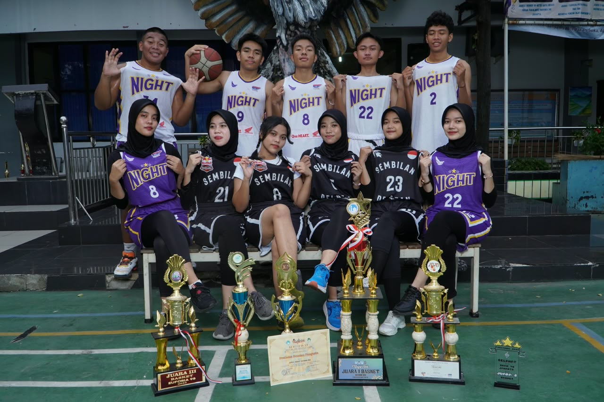
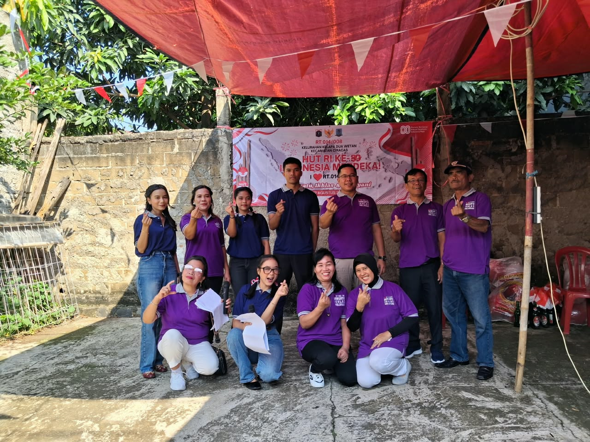
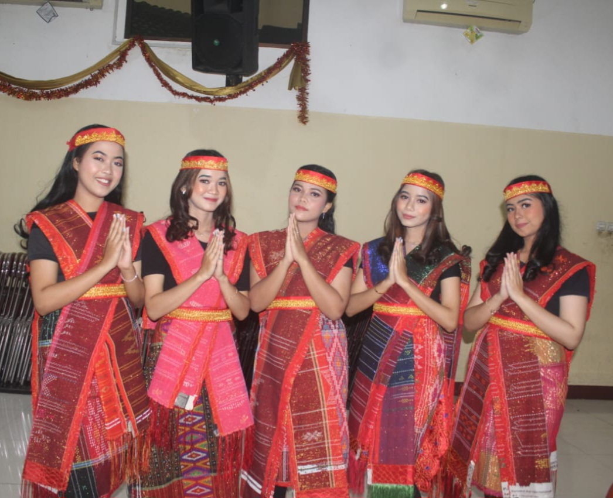

Microsoft Word
Document Editing
WELCOME TO MY PORTFOLIO
Informatics Engineering Student
Melalui website ini, saya membagikan perjalanan pendidikan, keterampilan, pengalaman organisasi, serta proyek yang saya kerjakan selama proses belajar dan mengembangkan diri.
GET TO KNOW ME
01 — ABOUT ME
Halo! Saya Yunita Siregar, mahasiswa semester 5 Program Studi Teknik Informatika di Universitas Indraprasta PGRI.
Bagi saya, setiap proses belajar memiliki cerita dan pengalaman tersendiri. Melalui perkuliahan, saya tidak hanya memperoleh pengetahuan, tetapi juga belajar untuk berpikir kritis, menghadapi tantangan, dan terus mengembangkan kemampuan diri.
Saya percaya bahwa kedisiplinan, tanggung jawab, dan kemauan untuk mencoba hal baru merupakan bagian penting dalam proses berkembang. Saya ingin terus belajar, memperluas pengalaman, dan menjadi pribadi yang lebih baik dari waktu ke waktu.
02 — MY SKILLS
Keterampilan yang saya gunakan dan terus kembangkan melalui kegiatan perkuliahan serta pengalaman organisasi.
Document Editing
Collaboration & Communication
03 — MY JOURNEY
Perjalanan pendidikan dan berbagai pengalaman yang membantu saya belajar, berkembang, serta memahami pentingnya tanggung jawab dan kerja sama.
Mahasiswa S1 Teknik Informatika sejak 2024.

Aktif mengikuti kegiatan ekstrakurikuler selama masa sekolah.

Berpartisipasi dalam kegiatan kepemudaan dan kemasyarakatan.

Terlibat dalam persiapan dan pelaksanaan kegiatan Natal.
04 — MY PROJECT
Website portofolio pribadi yang saya buat menggunakan HTML dan CSS untuk menampilkan profil, keterampilan, dan pengalaman saya.
VIEW PROJECT ↗05 — CONTACT
Terima kasih telah mengunjungi portofolio saya. Saya terbuka untuk berbagi pengalaman, bertukar ide, dan mempelajari hal-hal baru.